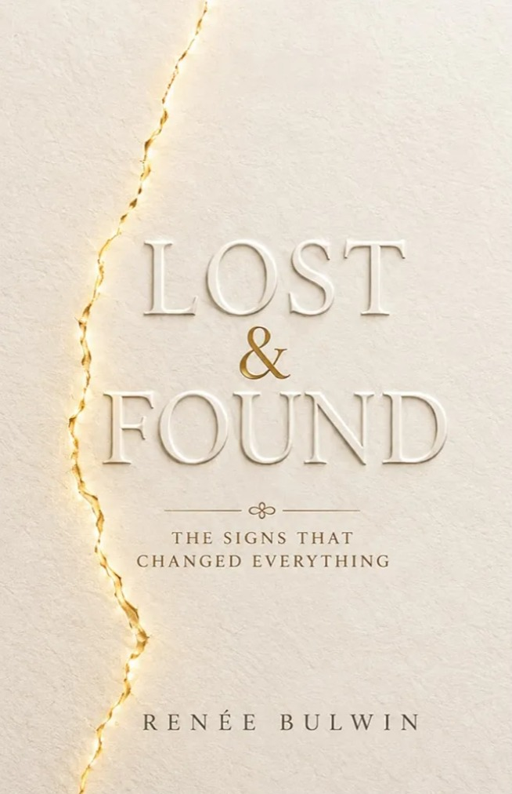

Lost & Found
The Signs That Changed Everything
What if the moments that feel like the end of your life are actually the beginning of finding yourself?
Paperback · 123 pages
From silence to truth
After years of keeping painful childhood experiences buried, Renée Bulwin finally found the courage to speak about what happened. But coming forward opened a door she never expected, and suddenly, her life began to change in ways she could not explain.
Renée began experiencing a series of unusual and deeply personal signs. At first, she questioned everything.
Was it coincidence? Something spiritual?
Or was she finally paying attention to what had been trying to get her attention all along?
Through the unraveling of her old life, Renée began to discover that healing isn't always a straight path. Sometimes it comes through unexpected people. Sometimes through moments that make no sense. And sometimes, it begins when we finally stop pretending we're okay.
Lost & Found is Renée's deeply personal journey from silence to truth, from feeling lost to discovering purpose, and from surviving her past to recognizing the signs that were guiding her toward something new.
This is a story about courage, healing, spirituality, and the possibility that even our darkest chapters can lead us somewhere we were always meant to go.
Book Details
- Title
- Lost & Found: The Signs That Changed Everything
- Author
- Renée Bulwin
- Format
- Paperback, 123 pages
- Published
- October 11, 2026
- Language
- English
- ISBN-13
- 979-8997127305